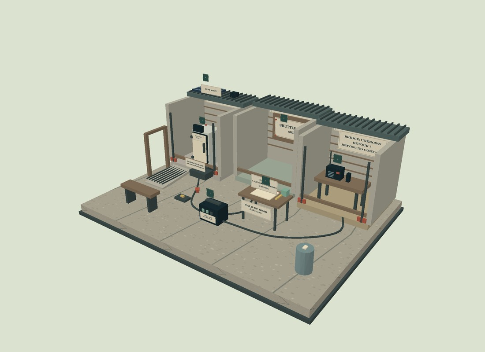

One courtyard.
Many obligations.
18:10, Yudae, 2030. Rain is coming through the shelter roof. The clinic’s logger has gone dark, the shuttle driver is out of contact, and an old notice is still sending people to the wrong place. One portable battery can supply one connection for the next interval.
Your role, the people here, and what is at stake
You are helping the Commons team work through a recommendation. Rae is keeping the clinic operating. Imani coordinates the shuttle. Sol maintains the public information desk. Jo can take on one extra follow-up while others cover the courtyard.
Public services still exist on paper. Tonight, the departmental numbers lead to recordings. The people here have practical authority over their own work; your recommendation is one input. In this authored trial the team accepts the connection you recommend, so you can explore what follows.
Inspect as much or as little as you need. Conversation can reveal a possibility, but nobody has a complete account. The story advances when you make a recommendation; reading slowly does not consume fictional time.
Open-front buildings are a viewing convention. They make the same objects available on screen and in AR. This is a fictional deliberation exercise, not a clinical or electrical procedure.

Phone AR capability is being checked. All decisions and investigations are also available on screen.